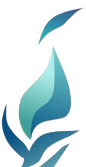
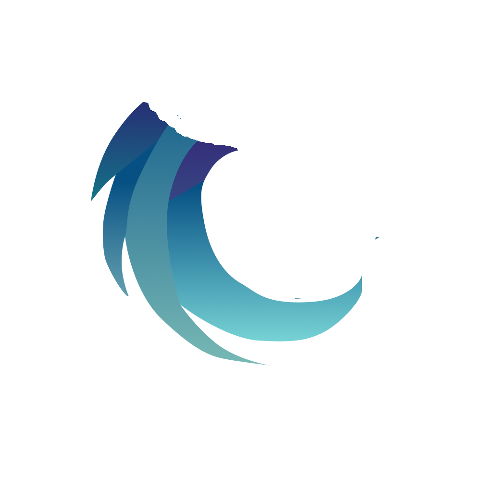
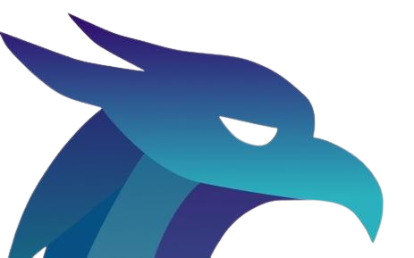

MONITOR

About MONITOR 2k25
MONITOR (Masa Orientasi Teknik Informatika) 2k25 is the official orientation program for new students of Informatics Engineering, UIN Sunan Gunung Djati Bandung. This event aims to build a generation of Informatics students who not only master technology, but are also resilient, creative, and competitive in facing the challenges of digital disruption in the era of Society 5.0.
SAKTI Philosophy
The core philosophy of MONITOR is summarized in the word SAKTI, which reflects the values that guide Informatics students:
- SOLID — Strengthening unity and teamwork as the foundation of success.
- AKTIF — Encouraging active participation in academic, organizational, and social activities.
- KREATIF — Developing innovative solutions and ideas to face complex challenges.
- TRANSFORMATIF — Adapting to change and driving positive transformation in the digital era.
- ISLAMI — Upholding moral and spiritual values as guidance in every action.
With SAKTI, MONITOR 2k25 is not just an orientation, but a journey to forge leaders, innovators, and changemakers in the world of Informatics.
Makna Setiap Bagian Monitor
Tunas

Melambangkan mahasiswa baru Teknik Informatika yang membawa harapan baru untuk tumbuh dan berkembang menjadi pohon yang kokoh di masa depan.
Makna Setiap Bagian Monitor
Sayap yang Memutar

Simbol dari inovasi dan harapan yang terus berputar, terus berkembang, demi menggapai tujuan-tunas yang ingin diraih.
Makna Setiap Bagian Monitor
Burung Phoenix

Burung legendaris yang penuh transformasi dan adaptasi, merepresentasikan Teknik Informatika yang selalu siap mengikuti pembaruan teknologi.